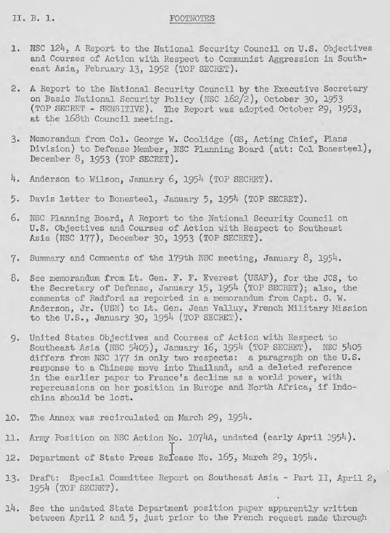
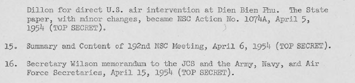

a. Chương trình cuối cùng Truman (NSC 124)
b. "Chính sách an ninh quốc gia cơ bản" của Chính quyền Eisenhower
B-5
B-5
B-5
a. Các vấn đề được trình bày
b. NSC: Quan điểm của Bộ Ngoại Giao và Bộ Quốc phòng
c. Quan điểm của JCS
d. Hình thành Nhóm Công Tác đặc biệt về Đông Dương
e. Báo cáo Erskine, Phần I: Động viên người Pháp
f. Báo cáo Erskine, Phần II: Can thiệp Chỉ Sau Hội Nghị Geneva?
g. Phụ lục của NSC 177 nêu câu hỏi về sự can thiệp trong tình hình mới
h. Quân đội đặt câu hỏi về tính khả thi của can thiệp bằng không-hải quân và đưa ra những nhu cầu cho lực lượng mặt đất
i. "Giải pháp" của Bộ Quốc phòng-JCS: khắc phục sự yếu kém của Pháp
B-5
B-5
B-6
B-7
B-7
B-8
B-8
B-9
B-10
B-11
a. Quyết định của Tổng thống Chỉ Hỗ trợ "hành động thống nhất "
b. Từ chối can thiệp đơn phương
B-11
B-12
B-13
1. Bối cảnh chính sách chung.
Cuộc tranh luận về sự khôn ngoan và cách thức can thiệp của Hoa Kỳ vào Đông Dương chủ yếu dựa trên ý muốn tham gia quân sự hay không, chứ không phải là vấn đề liên quan đến giá trị của Đông Dương đối với lợi ích an ninh của Hoa Kỳ ở vùng Viễn Đông. Chính quyền Eisenhower đã đồng ý về các giải thích hợp lý về lợi ích của Hoa Kỳ ở Đông Dương thể hiện bởi chính quyền Truman trước đó. Chính phủ Hoa Kỳ lần đầu tiên nắm bắt đầy đủ về vấn đề can thiệp là vào cuối năm 1953 -- đầu năm 1954 khi sự sụp đổ của Đông Dương dường như sắp xảy ra.
Chương trình cuối cùng của Truman (NSC 124)
NSC 124 (tháng 2 năm 1952) cho rằng bắt buộc phải ngăn cộng sản chiếm đóng Đông Dương. Nó thú nhận rằng ngay cả không thể định dạng được sự "xâm lược" của Cộng Sản Trung Hoa, Hoa Kỳ vẫn có thể bị buộc phải có một số hành động để ngăn chặn việc lật đổ các nước Đông Nam Á. Trong trường hợp Trung Cộng can thiệp công khai, theo NSC 124: (1) hỗ trợ hải - không quân và hậu cần cho lực lượng Liên minh Pháp; (2) dùng hải quân phong tỏa Cộng sản Trung Quốc (3) trên bộ và bằng tàu sân bay tấn công các mục tiêu quân sự ở Trung Quốc đại lục. Nó không đưa ra sự cam kết nào về việc xử dụng lực lượng mặt đất của Hoa Kỳ ở Đông Dương. 1/
"Chính sách an ninh quốc gia cơ bản" của Chính quyền Eisenhower
NSC 162/ 2, được thông qua vào năm 1953, mười tháng sau khi chính quyền của đảng Cộng hòa lên nắm quyền, là tài liệu cơ bản của "cái nhìn mới." Sau khi bình luận về Hoa Kỳ và khả năng phòng thủ của Liên Xô, viễn tượng về cân bằng hạt nhân và sự cần thiết để cân bằng chính sách kinh tế trong nước với chi phí quân sự, kêu gọi một thế trận quân sự dựa trên khả năng " trả đũa gây thiệt hại lớn " cho đối phương. Đông Dương đã được liệt kê như là một khu vực có "tầm quan trọng chiến lược" đối với Mỹ. Một cuộc tấn công vào các lĩnh vực quan trọng như vậy "có thể sẽ buộc Hoa Kỳ phản ứng với lực lượng quân sự kể cả [lực lượng] địa phương tại thời điểm của cuộc tấn công hay nói chung là chống lại sức mạnh quân sự của kẻ xâm lược." Việc sử dụng vũ khí hạt nhân chiến thuật trong các tình huống chiến tranh thông thường đã được đề nghị, nhưng họ không cụ thể đề nghị cho sử dụng ở Đông Dương. 2/
Cuối năm 1953, quân đội đã phổ biến giả định rằng sẽ không cần các lực lượng mặt đất ở Đông Dương là khu vực quan trọng đối với lợi ích an ninh Hoa Kỳ như các tài liệu NSC đã nêu. Quân đội đã kêu gọi rằng vấn đề phải đối phó thẳng băng là chuẩn bị tốt nhất để có thể hành động trong bất cứ điều tình huống nào xảy ra. Phòng Kế hoạch của Tổng Tham Mưu nêu lên rằng trong tình thế hiện tại, quân đội đã không có khả năng cung cấp lực lượng cấp sư đoàn cho các hoạt động ở Đông Dương trong khi vẫn duy trì lực lượng hiện tại của mình ở châu Âu và Viễn Đông. Quân đội cũng đề nghị "đánh giá lại tầm quan trọng của Đông Dương và Đông Nam Á trong mối quan hệ với các chi phí có thể để cứu nó". 3/
Với tình hình quân sự Pháp bị suy thoái ở Đông Dương, sự chú ý nghiêm túc đầu tiên đến được cho đến cách thức và kích thước của một can thiệp Mỹ. Câu hỏi để phải đối mặt là: cho đến chừng mực nào, Hoa Kỳ phải chuẩn bị lực lượng để đảm bảo rằng Đông Dương không lọt vào bàn tay Cộng sản? Bộ Quốc phòng, mặc dù vấn đề này không phải là mối bận tâm, đã bị thúc ép lấy sớm một quyết định về các lực lượng Hoa Kỳ sẽ được sẵn sàng để gửi [đến Đông Dương] trong tình huống khẩn cấp. Tư lệnh các chiến dịch hải quân, Đô đốc Robert Anderson, đề nghị Bộ trưởng Quốc phòng Wilson ngày 06 tháng 1, 1954, Hoa Kỳ quyết định ngay lập tức sử dụng lực lượng chiến đấu ở Đông Dương để "đảm bảo hợp lý về việc hỗ trợ mạnh mẽ [các lực lượng] bản địa bằng các lực lượng của chúng tôi", dù được hay không được chính phủ Pháp phê duyệt. 4/ Tuy nhiên, Phó Đô đốc AC Davis, Giám đốc của Văn phòng Quân sự Nước Ngoài trong Văn Phòng Bộ Trưởng Quốc Phòng [OSD - Office of the Secretary of Defense] đã viết:
"Sự tham gia của lực lượng Hoa Kỳ nên tránh cuộc chiến tranh Đông Dương vì tất cả các chi phí thực tế, sau đó, nếu chính sách quốc gia xác định không có thay thế nào khác, Hoa Kỳ không nên tự lừa mình mà tin vào khả năng [Mỹ] chỉ tham gia một phần - chẳng hạn bằng 'các đơn vị Hải và Không quân’. Người ta không thể nhẹ nhàng vượt qua thác Niagara Falls trong một cái thùng".
Đô đốc Davis nói tiếp:
“Bình luận: Nếu ý muốn được xác định là sẽ xử dụng không quân và các lực lượng hải quân trong cuộc chiến ở Đông Dương, rất khó để hiểu làm thế nào có thể tránh được sự tham gia của lực lượng mặt đất. Sức mạnh của không quân cần ở mức như vậy sẽ đòi hỏi các căn cứ đáng kể ở Đông Dương. Bảo vệ những cơ sở và thiết bị cảng chắc chắn sẽ cần tới lực lượng mặt đất, và các lực lượng mỗi khi dàn trải lại sẽ cần các đơn vị chiến đấu mặt đất để hỗ trợ những lần chuyển quân bị đe dọa. Phải hiểu rằng không có phương cách rẻ tiền nào để tham gia chiến tranh, một khi đã dấn vào". 5/
Các sự khác biệt rõ ràng giữa, chúng ta một bên, xác định cao giá trị chiến lược của Đông Dương, và một bên, chúng ta không sẵn sàng đi đến một quyết định chặc chẽ về các lực lượng cần thiết để bảo vệ khu vực đó đã trở thành chủ đề của cuộc họp 179 của NSC vào ngày 08 tháng 1, 1954. Tại cuộc họp này Hội đồng đã thảo luận NSC 177 về khu vực Đông Nam Á, 6/ nhưng đã quyết định không đếm xỉa đến các Phụ lục đặc biệt của NSC 177, trong đó đặt ra một loạt các lựa chọn mà Hoa Kỳ có thể phải đối mặt nếu tình thế quân đội Pháp ở Đông Dương vẫn tiếp tục xấu đi. Tuy nhiên, tại thời điểm đó NSC đã có một số tiến triển về vấn đề đã đặt ra cho chính nó.
Theo ghi chú tóm tắt của cuộc họp, 7/ Bộ Ngoại Giao và Bộ Quốc Phòng khác biệt đáng kể về những gì phải làm, cả một trong hai dự tính: đầu tiên, tiếng Pháp bỏ cuộc đấu tranh; thứ hai, Pháp sẽ yêu cầu một lực lượng Hoa Kỳ đáng kể (Hải, Lục, Không Quân). Quan điểm Bộ Ngoại Giao cho rằng tình hình [quân sự] của Pháp đã rất trầm trọng [như theo lời của báo cáo viên] đến nỗi "đã buộc Hoa Kỳ phải quyết định sử dụng lực lượng Hoa Kỳ vào cuộc chiến ở Đông Nam Á." Người đại diện Quốc phòng từ chối bảo lãnh việc Hoa Kỳ tham gia. Báo cáo cho biết ông đã phát biểu rằng Pháp có thể giành chiến thắng vào mùa xuân năm 1955 với viện trợ của Hoa Kỳ và Pháp đã cải thiện quan hệ chính trị với Việt Nam. Đưa quân đội Hoa Kỳ vào một cuộc ‘nội chiến’ ở Đông Dương sẽ là thừa nhận việc phá sản củachính sách chính trị của chúng ta lại Đông Nam Á và Pháp và chỉ cần đưa ra trong trường hợp cực kỳ cần thiết. " Ông kêu gọi làm mọi cách để tránh cho việc Hoa Kỳ phải tham gia trực tiếp.
Cuộc họp của Hội đồng [An Ninh Quốc Gia] đã đạt được hai kết luận quan trọng, cả hai hoàn toàn phù hợp với quan điểm của Bộ Quốc phòng. Đầu tiên, nó quyết định rằng một cuộc thảo luận đã bất ngờ cho thấy việc tham gia của Hoa Kỳ đã hụt đi một quan trọng là người Pháp có khả năng chiến thắng khi họ có được sự hợp tác chính trị và quân sự của người bản xứ. Thứ hai, NSC 177, như Quốc phòng đề nghị, đã thiếu sót khi không nghiên cứu đầy đủ, thất bại trong việc nắm bắt thực tế là: cuối cùng sự thành công ở Đông Dương phụ thuộc vào khả năng Pháp giải quyết vấn đề làm thế nào để có được hỗ trợ của người Việt Nam trong các nỗ lực chiến tranh.
Cuộc họp NCS ngày 8 tháng 1 vẫn còn bỏ ngỏ câu hỏi về hành động quân sự của Hoa Kỳ trong sự kiện không thể chối cãi là sự cần thiết ngăn chặn sự "mất mát" của Đông Dương. Về vấn đề này, các tham mưu trưởng chọn thái độ mở. Người đứng đầu nghĩ rằng kế hoạch Navarre về cơ bản là được, nhưng liên tục bị phá vì cái hố sâu khoảng cách giữa Pháp và người Việt Nam, bởi sự thất bại của tướng Navarre trong việc thực hiện những khuyến nghị của Mỹ, và bởi những do dự tại Paris về các nhượng bộ chính trị cần thiết cho chính phủ Bảo Đại. Tuy nhiên, JCS [Joint Chief Saff- Bộ Tổng Tham Mưu] cũng chẳng loại trừ việc sử dụng lực lượng chiến đấu Hoa Kỳ hoặc ủng hộ hết mình việc xử dụng nó. 8/
Không hài lòng với NSC 177 và thất bại tiếp theo với NSC 5405 9/ để giải quyết vấn đề cam kết lực lượng mặt đất đã dẫn đến sự hình thành một nhóm làm việc để đánh giá các nỗ lực quân sự Pháp, để đưa ra các khuyến nghị liên quan đến đóng góp tương lai của Hoa Kỳ cho nó, và để cống hiến chú ý đến các tình huống khác nhau, theo đó Hoa Kỳ có thể được gọi can thiệp trực tiếp vào chiến tranh. Nhóm làm việc, dưới sự chủ trì của Tướng GB Erskine (USMC, Ret. – Thủy Quân Lục Chiến Hoa Kỳ - đã về hưu), bao gồm đại diện Bộ Ngoại Giao, Bộ Quốc phòng, các tham mưu trưởng liên quân, và CIA. Nhóm này chịu trách nhiệm trước NSC thông qua Tướng W. Bedell Smith, Phó Bộ Trưởng Ngoại Giao, người đã được Hội Đồng [An Ninh Quóc Gia] chỉ định đứng đầu Ủy Ban Đặc Biệt về Hoa Kỳ và Đông Dương.
Phần đầu tiên của báo cáo gồm hai phần của Erskine, ngày 06 tháng 2 năm 1954, được dựa trên giả định rằng chính sách của Hoa Kỳ đối với Đông Dương sẽ không yêu cầu các hoạt động chiến đấu công khai của các lực lượng Hoa Kỳ. Trong khuôn khổ đó, các báo cáo là gần gũi chặc chẽ với quan điểm của Bộ Quốc Phòng là Pháp, nếu được động viên đúng cách, có thể giành chiến thắng ở Đông Dương, nhưng thất bại của Pháp trong việc thực hiện các cải cách cần thiết sẽ đòi hỏi Hoa Kỳ phải xem xét việc tham gia tích cực. Báo cáo lưu ý rằng:
"Đã có ở Đông Dương, hoặc đã được sắp xếp cho Đông Dương..., một số lượng đầy đủ về thiết bị, vật tư và khối nhân lực tiềm năng để sau cùng đánh bại hoàn toàn Cộng Sản nếu sử dụng và duy trì chúng đúng cách và nếu tình hình tiếp tục cho phép khối nhân lực này được chuyển đổi thành những hiệu năng quân sự. Thành công cuối cùng sẽ phụ thuộc vào lòng người dân bản xứ về việc đấu tranh cho tự do của họ chống lại sự thống trị của Cộng sản và cả việc Pháp sẵn sàng đưa những biện pháp nhằm kích thích là nguồn cảm hứng [lòng dân] và sử dụng đầy đủ tiềm năng bản địa. "
Báo cáo Erskine (Phần I) đã khuyến cáo: (1) tăng thêm lực lượng không quân Pháp, nhưng không sử dụng các nhân viên Mỹ; (2) tăng $124 triệu hỗ trợ quân sự của Mỹ (bổ sung cho năm tài chính 1954 đã cam kết 1,115 tỷ USD); (3) nâng tình chất của MAAG thành Tổ Công Tác Quân Sự, với việc mở rộng nhân sự và cơ quan tư vấn về đào tạo và quy hoạch; (4) bổ xung thêm nhân sự Hoa Kỳ có nhiệm vụ làm huấn luyện viên và thực hiện các nhiệm vụ quan trọng khác trong lực lượng Pháp (5) Tổng thống gửi thư cho người đứng đầu các nước liên kết, tái khẳng định sự hỗ trợ của chúng ta về độc lập của họ và giải thích động cơ của chúng ta trong việc hỗ trợ họ thông qua Pháp; (6) một nỗ lực cần được thực hiện để thuyết phục Bảo Đại có phần tích cực hơn trong cuộc đấu tranh chống lại Việt Minh. Báo cáo kết luận rằng chương trình đề nghị những thay đổi có thể mang lại chiến thắng trên Việt Minh, nếu nó được Pháp phê duyệt và nếu ngăn được sự can thiệp của Trung Quốc.
Phần thứ hai của Báo cáo Erskine đã không xuất hiện cho đến ngày 17 Tháng Ba, 1954, và không giống như phần đầu, là trách nhiệm duy nhất của Bộ Quốc phòng và Bộ Tổng tham mưu, với Bộ Ngoại giao giữ vị trí "bảo lưu ". Báo cáo khẳng định lại quyết định trước đó cho rằng sự mất mát của Đông Dương sẽ là một thất bại quân sự và chính trị lớn đối với Hoa Kỳ. Khuyến cáo rằng trước khi bắt đầu của Hội nghị Geneva, Hoa Kỳ nên thông báo cho Anh và Pháp rằng là chúng ta chỉ quan tâm đến chiến thắng quân sự ở Đông Dương và sẽ không liên kết chúng ta với bất kỳ cách giải quyết nào làm giảm mục tiêu đó. Báo cáo tiếp tục khuyến cáo rằng trong trường hợp một kết quả không đạt yêu cầu tại Geneva, Hoa Kỳ nên tiếp tục theo đuổi cuộc đấu tranh kết hợp với các nước Đông Dương, Vương quốc Anh, và các đồng minh khác. Do đó NSC đã được yêu cầu xác định mức độ của Hoa Kỳ để sẵn sàng đưa lực lượng chiến đấu tới khu vực, có hoặc không có sự hợp tác của Pháp. Nhưng cuộc bao vây Điện Biên Phủ vừa mới bắt đầu, và Hội nghị Giơ-ne-vơ sẽ bắt đầu trong sáu tuần, báo cáo của Erskine đề nghị rằng Hoa Kỳ nên gây ảnh hưởng và quan sát diễn tiến của Hội nghị Giơ-ne-vơ trước khi quyết định tích cực tham gia.
Sau phần thứ hai của Báo cáo Erskine, Tổng Thống rõ ràng đã quyết định rằng Phụ Lục Đặc Biệt NSC 177, đã được thu hồi trong tháng 1 năm 1954, nên được phân phối lại để xem xét bởi Ban Kế Hoạch của Hội Đồng. 10/ Phụ lục của NSC 177 đưa ra sự lựa chọn cơ bản, giữa (a) chấp nhận mất Đông Dương, tiếp theo là những nỗ lực của Hoa Kỳ để ngăn chặn suy giảm hơn nữa của các vị trí an ninh của chúng ta ở Đông Nam Á, hoặc (b) trực tiếp hành động quân sự để cứu Đông Dương trước khi Pháp và Việt Nam thỏa thuận một giải pháp chính trị không thể chấp nhận được tại Geneva.
Trong số các chuỗi hành động thay thế được nêu trong Phụ lục, đặc biệt là có hai hướng chỉ đạo hành động của Hoa Kỳ trước khi Giơ-ne-vơ kết luận một giải pháp. Theo hướng đầu tiên, dựa trên việc Pháp đồng ý tiếp tục chiến đấu, Hoa Kỳ đã kêu gọi (1) tìm kiếm một giải Pháp-Việt về vấn đề độc lập [của Việt Nam], (2) nhấn mạnh vào việc xây dựng một lực lượng bản địa với tư vấn và hỗ trợ vật chất của Mỹ, (3) yêu cầu Pháp duy trì các lực lượng của họ trên lãnh thổ như mức hiện tại, và (4) chuẩn bị để cung cấp đầy đủ lực lượng Hoa Kỳ để có thể thành công trong một nỗ lực chung. Quốc tế hóa chiến tranh sẽ được thảo luận với Pháp sau, do đó nên bỏ qua ngay lập tức những hành động phối hợp với Anh hay các quốc gia Châu Á.
Giải pháp thay thế thứ hai giả định Pháp sẽ rút ra. Trong trường hợp này Hoa Kỳ có thể hoặc chấp nhận mất Đông Dương, hoặc thông qua một chính sách tích cực trong khi Pháp dần dần rút quân. Nếu chúng ta chấp nhận bước thứ hai, đó là bước "tích cực nhất " sẽ đưa đến “đảm bảo thành công lớn nhất ", theo NSC ước tính, sẽ phải tham gia với các lực lượng bản địa trong việc chống lại Việt Minh cho đến khi họ rơi vào "tình trạng các nhóm du kích phân tán." Hải, Lục, Không Quân của Hoa Kỳ sẽ được cần đến.
Phụ lục được dựa trên giả định rằng sự tham gia của Hoa Kỳ chống lại Việt Minh sẽ không kéo theo một can thiệp ồ ạt của Trung Quốc, sẽ không dẫn đến việc tham gia trực tiếp của Liên Xô, và rằng chiến sự tại Hàn Quốc sẽ không bị nổ lại. Nó thừa nhận rằng bất kỳ sự thay đổi nào trong các giả định nghiêm túc sẽ gây nguy hiểm cho sự thành công của các phương án đề xuất. Đặc biệt, lưu ý rằng sự tham gia của Hoa Kỳ sẽ làm tăng cao nguy cơ can thiệp của Trung Quốc, và Trung Quốc nhập cuộc sẽ làm thay đổi hoàn toàn ngay lập tức tình hình quân sự và các yêu cầu về các lực lượng Mỹ.
Kết quả chính của các cuộc thảo luận trong Phụ lục Đặc Biệt của NSC 177 là đã đưa vấn đề chi phí về nhân lực và trang thiết bị trường hợp có sự tham gia của Hoa Kỳ vào thảo luận. Quân đội rất căng về quy hoạch dự phòng dựa trên giả định rằng Không quân và các lực lượng hải quân Hoa Kỳ có thể được sử dụng ở Đông Dương mà không có các lực lượng chiến đấu mặt đất. Tướng Matthew B. Ridglvay, Tổng Tham Mưu Trưởng quân đội, sau này đã viết trong Hồi Ký của ông, rằng ông đã khá băn khoăn khi nói chuyện trong giới quan chức cao cấp về việc chỉ sử dụng sức mạnh hải quân, không quân ở Đông Dương. Văn thư cho ý kiến của quân đội nộp cho NSC trong tuần đầu tiên của tháng tư năm 1954, lập luận như sau:
"1 - can thiệp của Hoa Kỳ chung với các lực lượng chiến đấu ở Đông Dương không phải là điều mong muốn trong quân sự...
2 - Một chiến thắng ở Đông Dương không có thể được đảm bảo chỉ bằng sự can thiệp với lực lượng không và hải quân của Mỹ.
"3 - Việc sử dụng vũ khí nguyên tử ở Đông Dương sẽ không làm giảm số lượng lực lượng mặt đất cần thiết để đạt được một chiến thắng ở Đông Dương.
"4 - Bảy sư đoàn Hoa Kỳ hoặc tương đương, với sự hỗ trợ hải và không quân thích hợp, sẽ được cần đến để giành một chiến thắng ở Đông Dương nếu Pháp rút và cộng sản Trung Quốc không can thiệp. Tuy nhiên, kế hoạch can thiệp của Hoa Kỳ không thể dựa trên giả định rằng Cộng sản Trung Quốc sẽ không can thiệp.
"5 - Tương đương với 12 sư đoàn Hoa Kỳ sẽ được yêu cầu để giành một chiến thắng ở Đông Dương nếu Pháp rút và Cộng sản Trung Quốc can thiệp.
"6 - Tương đương với 7 sư đoàn Hoa Kỳ sẽ được yêu cầu để giành một chiến thắng ở Đông Dương, nếu người Pháp ở lại và cộng sản Trung Quốc can thiệp.
"7 - Nhu cầu về không quân và hỗ trợ hải quân cho các hoạt động lực lượng mặt đất là:
"8. Hai sư đoàn Hoa Kỳ có thể có mặt ở Đông Dương trong 30 ngày, và 5 sư đoàn bổ sung trong 120 ngày sau có thể được thực hiện mà không làm giảm sức mạnh mặt đất của Hoa Kỳ ở vùng Viễn Đông đến một mức độ không thể chấp nhận được, nhưng khả năng đáp ứng cam kết của Hoa Kỳ với NATO sẽ bị ảnh hưởng nghiêm trọng trong một thời gian đáng kể. Thời gian cần thiết để đặt 12 sư đoàn ở Đông Dương sẽ phụ thuộc vào các biện pháp chuyển vận vật liệu và nhân sự của chính phủ... " 11/
Đối mặt với ước tính rằng các hành động không, hải quân không thể đảo ngược được tình thế, và một lực lượng mặt đất với kích thước thích hợp sẽ tác động đến các cam kết khác, Bộ Quốc phòng và JCS cho rằng giải pháp quân sự thay thế đã có sẵn trong trong tầm với của Pháp mà không cần yêu cầu Hoa Kỳ can thiệp. Bộ Quốc phòng lập luận rằng ba lý do cho tình hình của Pháp bị xấu đi là (1) thiếu ý chí giành chiến thắng, (2) miễn cưỡng đáp ứng nhu cầu độc lập thật sự của Đông Dương, (3) từ chối đào tạo nhân sự bản địa để lãnh đạo quân sự. Do đó Bộ Quốc phòng tin rằng sự tham gia sớm của Hoa Kỳ sẽ đưa ra những câu hỏi cơ bản liệu Hoa Kỳ đã chuẩn bị để gây những áp lực mạnh nhất lên Pháp, chủ yếu là trong bối cảnh châu Âu, để Pháp tại Paris và ở Đông Dương có biện pháp thích hợp để khắc phục những thiếu sót. Chỉ khi nào các biện pháp này đã được thi hành, Bộ Quốc phòng sẽ nghiêm túc xem xét việc cam kết đưa các lực lượng mặt đất của Hoa Kỳ để bảo vệ lợi ích của Pháp và ba nước Đông Dương. Tác động của quan điểm của Bộ Quốc phòng-JCS là thách thức quan điểm cho rằng một hành động quân sự nhanh chóng của Hoa Kỳ ở Đông Dương sẽ là khả thi hoặc cần thiết.
3. Cách tiếp cận mới: "hành động thống nhất"
Tại thời điểm này chính quyền Eisenhower bắt đầu xem xét nghiêm túc việc mở rộng bất kỳ sự can thiệp quân sự Hoa Kỳ ở Đông Dương bằng cách làm cho nó thành một phần của một liên minh tập thể cùng với các đồng minh châu Âu và châu Á. Bộ trưởng Ngoại Giao Dulles trong một bài phát biểu vào ngày 29 tháng 3 đã cảnh báo công chúng về tình hình đáng báo động ở Đông Dương và được gọi là "hành động thống nhất" mà không cần định nghĩa nó hơn nữa - những lời này:
"Theo các điều kiện của ngày hôm nay, việc áp đặt vào khu vực Đông Nam Á hệ thống chính trị của Cộng sản Nga và đồng minh Cộng sản Trung Quốc, bất cứ dưới hình thức nào, sẽ là một mối đe dọa nghiêm trọng cho toàn bộ cộng đồng tự do. Hoa Kỳ cảm thấy rằng không nên chấp nhận khả năng đó một cách thụ động mà cần phải được đáp ứng bởi một hành động thống nhất dù nó có thể kéo theo các rủi ro nghiêm trọng, nhưng những rủi ro này sẽ là ít hơn so với những gì chúng ta sẽ phải đối mặt trong vòng một vài năm tới nếu chúng ta không dám kiên quyết giải quyết nó ngày hôm nay." 12/
Ủy Ban Đặc Biệt về Hoa Kỳ và Đông Dương của Phó Bộ Trưởng Ngoại Giao W. Bedell Smith, mà nhóm làm việc Erskine đã báo cáo, đã ban hành một nghiên cứu ngày 02 Tháng tư. Báo cáo này đi xa hơn vấn đề giữ Đông Dương và đồng ý rằng bất cứ điều gì xảy ra cho số phận của khu vực, Hoa Kỳ nên bắt đầu phát triển một hệ thống phòng thủ chung cho khu vực Đông Nam Á. Trong ngắn hạn, Ủy ban Smith ủng hộ Hoa Kỳ tài trợ một hiệp ước phòng thủ chung chống lại sự xâm lược của cộng sản ở Đông Dương và Thái Lan. Về lâu dài, đề nghị thúc đẩy "sắp xếp việc phòng thủ khu vực và chung ở châu Á được các cường quốc châu Âu có lợi ích ở Thái Bình Dương tham gia và bảo đảm." 13/
Suy nghĩ của Bộ Ngoại giao vào đầu tháng 4 năm 1954 là không sai biệt đáng kể với Bộ Quốc phòng và Ủy ban Smith. Có lẽ nhiều sai biệt hơn so với Bộ Quốc phòng, Bộ Ngoại giao quan tâm về phản ứng của Trung Quốc về việc can thiệp quân sự của Mỹ. Nó kêu gọi sự thận trọng và đề nghị rằng trong bất kỳ loại "hành động thống nhất" nào, Hoa Kỳ phải đưa ra rõ ràng đối với cả Trung Quốc và các đồng minh rằng can thiệp sẽ không nhằm mục đích lật đổ, tiêu hủy của chế độ Bắc Kinh. Bộ Ngoại giao đề nghị: (1) không có quân đội Hoa Kỳ can thiệp cho thời điểm này, cũng không nên hứa gì với người Pháp, (2) tiếp tục lập kế hoạch can thiệp quân sự, (3) thảo luận với các đồng minh tiềm năng về khả năng hình thành một nhóm khu vực trong trường hợp giải quyết tại Geneva là không thể chấp nhận được. 14/
Quyết định của Tổng Thống chỉ ủng hộ "hành động thống nhất "
Trong khi đó, Tổng thống quyết định, sau một cuộc họp với Bộ trưởng Dulles và Đô Đốc Radford, Chủ Tịch Tham Mưu Trưởng Liên Quân, với các lãnh đạo Quốc hội vào ngày 03 Tháng Tư, rằng Hoa Kỳ sẽ không thực hiện một can thiệp đơn phương. Bất kỳ sự tham gia của quân đội Hoa Kỳ ở Đông Dương sẽ tùy thuộc (1) hình thành một lực lượng liên minh với các đồng minh của Hoa Kỳ để " hành động thống nhất ", (2) Pháp tuyên bố ý định tăng tốc độ giao trả độc lập cho ba nước Đông Dương; (3) Quốc hội phê duyệt việc tham gia của Hoa Kỳ (được cho là phụ thuộc điểm (1) và (2)).
Những hướng dẫn về chính sách này chắc chắn đã ảnh hưởng NSC, tại một cuộc họp vào ngày 06 tháng 4, đã đưa ra các mục tiêu phần nào không tương thích rằng Hoa Kỳ (a) "can thiệp nếu cần thiết để tránh mất Đông Dương, nhưng lại ủng hộ rằng không bỏ bước đi nào để giúp người Pháp tự mình đạt được một kết thúc thành công của cuộc chiến", và (b) ủng hộ như một giải pháp thay thế tốt nhất cho sự can thiệp của Hoa Kỳ bằng một nhóm khu vực với sự tham gia tối đa của châu Á. 15/
Tổng thống chấp nhận các khuyến nghị của NSC nhưng quyết định rằng từ nay trở đi của những nỗ lực chính sẽ được dành cho các việc: (1) Bộ Quốc phòng tổ chức tập thể [an ninh] khu vực chống lại Cộng sản mở rộng; (2) có được hỗ trợ của Anh cho Hoa Kỳ về các mục tiêu ở Đông Nam Á; (3) thúc đẩy Pháp tăng tốc thời gian biểu của mình cho độc lập của Đông Dương. Tổng thống sẽ tìm kiếm sự chấp thuận của Quốc hội Hoa Kỳ tham gia vào một thỏa thuận khu vực, nếu nó có thể được đặt lại với nhau, và trong khi đó kế hoạch dự phòng về huy động [nguồn lực cho chiến tranh] sẽ bắt đầu. 16/
Từ chối can thiệp đơn phương
Vì vậy, bức tường thành [chống cộng] chính là nỗ lực của Pháp ở Điện Biên Phủ, và câu hỏi ‘Hoa Kỳ sẽ phải làm gì’ nay trở thành quan trọng khi chính phủ Hoa Kỳ không ủng hộ sự can thiệp đơn phương. Bộ Quốc phòng Hoa Kỳ không muốn can thiệp tiếp theo phần trình bày của quân đội là chỉ dùng hải và không quân sẽ không thành công và lực lượng mặt đất sẽ là cần thiết. Kinh nghiệm gần đây của chiến tranh Hàn Quốc đã giảm nhẹ mạnh mẽ những chống đối về sự tham gia của Hoa Kỳ trong một cuộc chiến tranh trên đất liền ở châu Á. Hơn nữa, Tổng thống đã không sẵn sàng tham gia vào một việc mạo hiểm như vậy, trừ khi nó được bao che với phê duyệt của Quốc hội. Một phê duyệt như thế, tới phiên nó, lại phụ thuộc vào sự tham gia của các nước đồng minh. Do đó, Ngoại trưởng Dulles thực hiện nhiệm vụ thuyết phục các nước Anh, Pháp và các đồng minh châu Á tham gia vào một liên minh "hành động thống nhất" ở Đông Dương.

